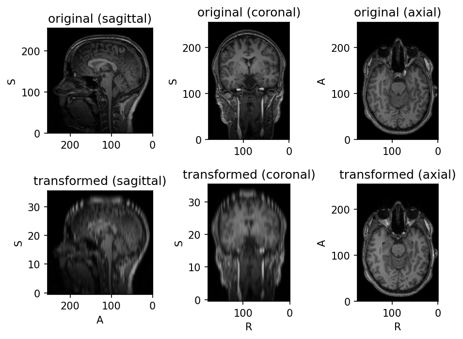

Resample only one axis
In this example, we create a custom preprocessing transfom that changes the image spacing across one axis only.
Inspired by this discussion .
import torch
import torchio as tio
class ResampleZ:
def __init__(self, spacing_z):
self.spacing_z = spacing_z
def __call__(self, subject):
# We'll assume all images in the subject have the same spacing
sx, sy, _ = subject.spacing
resample = tio.Resample((sx, sy, self.spacing_z))
resampled = resample(subject)
return resampled
torch.manual_seed(42)
image = tio.datasets.FPG().t1
transforms = tio.ToCanonical(), ResampleZ(spacing_z=7)
transform = tio.Compose(transforms)
transformed = transform(image)
subject = tio.Subject(original=image, transformed=transformed)
subject.plot()

:fontawesome-brands-github: View source on GitHub{ .md-button }